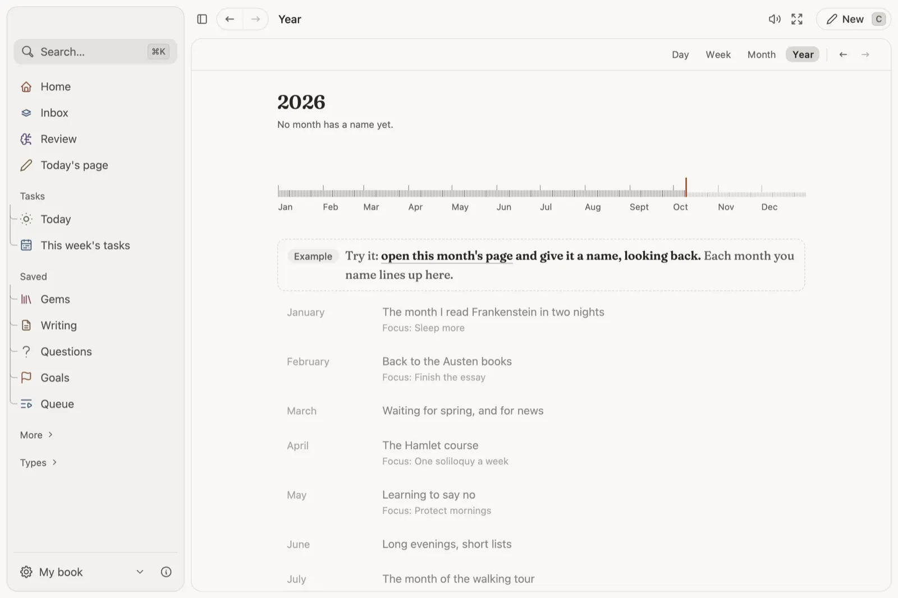

Days add up to a year you can read.
Write a line on today's page, a few on the week and the month. At the end, name each month for what it turned out to be.

How it works
- A page for every day, week and month. What you caught, finished and reviewed that day gathers under the page on its own.
- Seasons of life. Give each month a focus as it starts and a name as it ends. The Year page lines them up as the story it was.
- Marked days. Give a day a purpose, like Exam or Launch, and count down to it from Home and the menu bar.
- Your month and Your year. What you caught, your busiest day and the books you finished, played back like a story.